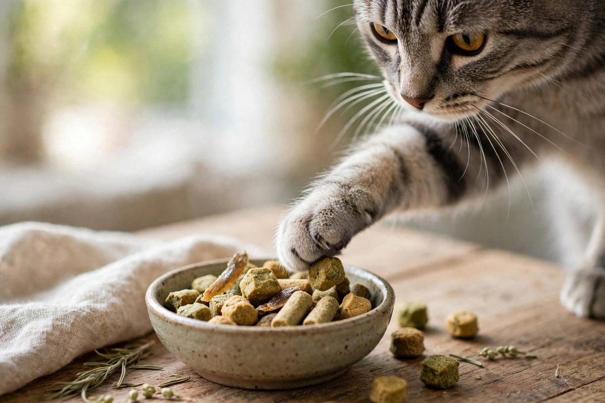

Home › Guides
Cat Treats Guide: How Many Is Too Many?

Treats are one of the best parts of living with a cat. They help with training, they comfort a nervous cat, and they are a small daily pleasure. The trouble is that treats are also one of the fastest ways to unbalance a diet. A few extra treats a day can add up to thousands of extra calories over a year, and cats do not burn them off the way people hope.
The 10 percent rule
Vets recommend that treats stay under 10 percent of a cat's daily calories. For a typical 4 kg cat eating about 240 calories a day, that means no more than 24 calories from treats. That is roughly three or four small commercial treats, or a tablespoon of cooked chicken. It is much less than most owners guess, which is why weighing treats for a week is an eye-opening exercise.
The rule exists because a complete cat food already contains everything a cat needs. Treats add calories without adding balanced nutrition. When treats pass 10 percent, they start to displace real food, and the cat can miss out on nutrients even while gaining weight.
Choosing good treats
The best treats are small, soft, and easy to portion. Commercial cat treats made by reputable brands are formulated to be safe, and the packet usually states the calories per treat, which makes counting easy. Freeze-dried meat treats are a good option because they are usually a single ingredient with no added sugar.
Plain cooked chicken, turkey, or white fish, cut into pea-sized pieces, make excellent treats. A few pieces of the cat's normal kibble, offered by hand, work well for training and add no extra calories at all. Avoid treats with added sugar, artificial colours, or vague ingredient lists.
Treats to avoid
Never give a cat dog treats, which are not formulated for cats and may lack taurine. Avoid raw meat treats, which carry bacteria, and any treat containing onion, garlic, chocolate, or xylitol. Cooked bones are dangerous, and dairy treats often upset a cat's stomach because most adult cats cannot digest lactose well.
Human snacks such as crisps, biscuits, and cheese are poor treats. They are salty or fatty, and the portions are hard to control. A small piece of cheese once in a while is fine for most cats, but it should not become a daily habit.
Using treats well
Treats work best as a tool, not a habit. Use them to reward calm behaviour, to encourage a cat into a carrier, or to make a vet visit less stressful. Give them at set times rather than whenever the cat asks, and reduce the main meal slightly on days when the cat has had more treats.
If several people in the household give treats, agree on a daily allowance and keep the treats in one jar so everyone can see how many are left. Puzzle feeders that dispense a few pieces of kibble turn treat time into play time, which is better for the cat than a handful of treats in a bowl.
Training with treats
Treats are a training tool, and small is better. Use pea-sized pieces, so you can reward the cat many times without adding many calories. A single large treat is one reward; the same treat cut into four pieces is four rewards, and the cat values the number of rewards more than the size.
Use treats to teach useful behaviours: coming when called, entering a carrier, or accepting handling. Reward calm behaviour, not demanding behaviour, and stop when the cat loses interest. Training sessions should last five minutes at most, and they should always end with a success. A cat that learns to enjoy the carrier will be far less stressed at the vet.
Frequently Asked Questions
How many treats can my cat have a day?
Keep treats under 10 percent of daily calories. For most adult cats that is three or four small treats, or a tablespoon of cooked chicken.
Are dental treats good for cats?
Some veterinary dental treats can help reduce tartar, but they do not replace brushing or professional cleaning. Ask your vet which ones are proven to work.